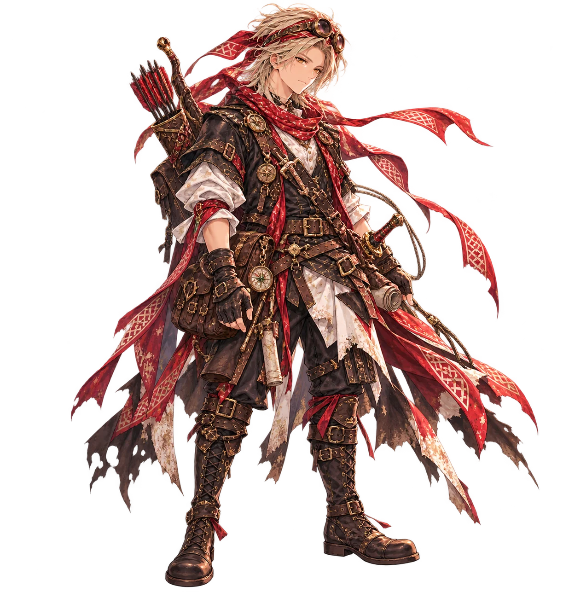
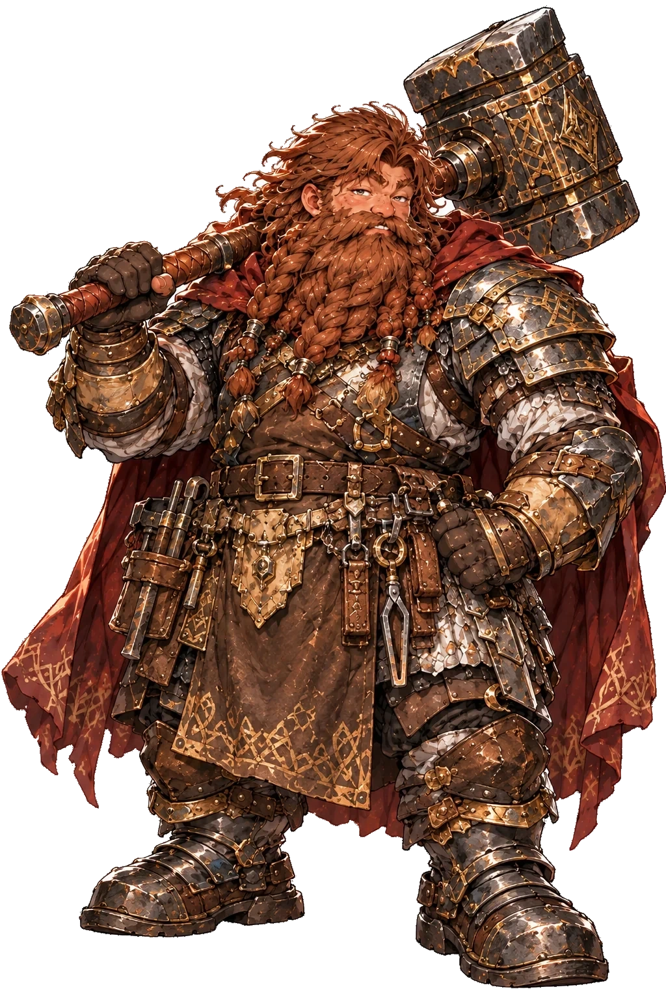
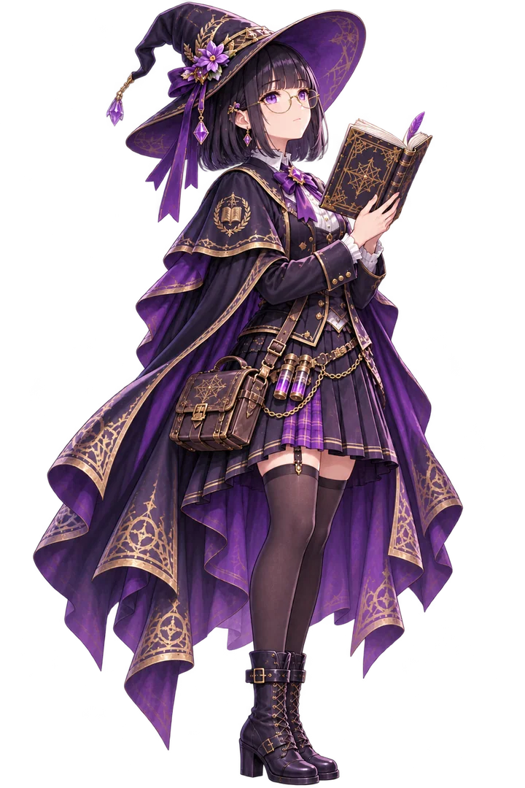
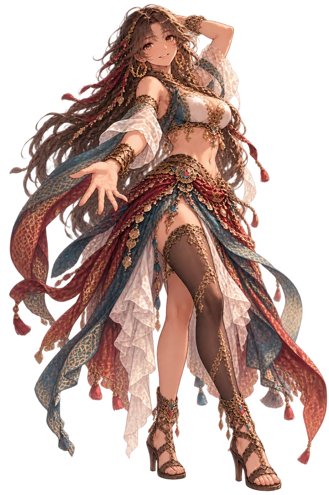

EXPLORE
探索
草原の風も、森の静けさも、旅の一頁に。
緑の大地を歩き、小さな村に息づく人々の声に耳を傾ける。
何気ない会話や寄り道の先にも、新たな発見が待っている。
- 見下ろし型のフィールドマップを自由に歩いて探索
- PCは方向キー・WASD・クリック、スマートフォンはタップで移動
- 村人との会話やサブクエスト
- 敵はフィールド上に姿を見せ、触れると戦闘が始まる


NEWS

STORY
PROLOGUE ―「風が止んだ夜」
あの日の風を、まだ覚えている。
緑豊かな大地に、風が穏やかに吹き抜ける小さな村、リルド。
少年エイダンは、幼なじみのフィオナや村の人々に囲まれ、剣の稽古に励みながら穏やかな日々を過ごしていた。
仲間たちと笑い合い、交わした言葉も、何気ない約束も、いつまでも続いていくと信じていた。
ただ、その穏やかな風が、いつか止むことなど知らずに。
そして、ひとつの夜を境に、少年の運命は静かに動き始める。
その胸に、大切な人たちとの記憶を抱いて。
SYSTEM
歩き、出会い、戦いながら、物語は紡がれていく。
風の吹く世界を旅し、仲間とともに成長するファンタジーRPG。
開発中のプロローグ版で遊べる内容を紹介します。仕様は今後変わる場合があります。
EXPLORE
草原の風も、森の静けさも、旅の一頁に。
緑の大地を歩き、小さな村に息づく人々の声に耳を傾ける。
何気ない会話や寄り道の先にも、新たな発見が待っている。
BATTLE
剣と知恵、そして仲間とともに。
立ちはだかる敵に、仲間と力を合わせて挑む。
剣技や防御を使い分け、一手ごとの選択で戦いの道を切り拓いていく。
GROWTH
歩んだ道のりが、明日の強さになる。
戦いを重ねて力を磨き、新たな出会いとともに成長していく。
旅で得た経験のひとつひとつが、次の一歩を支える力となる。
CHARACTERS
風の物語を、ともに歩む者たち。
それぞれの想いを胸に、少年たちの旅が始まる。

AIDAN
守りたいものがある。その想いを、剣に託して。
緑豊かなリルド村で育った、17歳の少年。王国騎士団長コナーを父に持ち、幼い頃から剣の稽古に励んできた。
仲間たちと笑い合う明るさを持ちながらも、父の背中を追い、その期待に応えようとひたむきに努力する。
大切な人を守りたい。その想いを胸に、少年はその剣とともに歩み出す。

FIONA
その優しさが、明日への希望になる。
リルド村で、養母エマの愛情に包まれて育った少女。
幼なじみのエイダンとは、幼い頃から喜びも悲しみも分かち合ってきた。
自然や生命に寄り添う癒やしの力を持ち、傷ついた人々にそっと手を差し伸べる。
その穏やかな優しさの奥には、大切な人とともに歩もうとする、確かな強さが宿っている。

LOU
木々のささやきが導く、小さな出会い。
苔むす古木と清らかな水に包まれたモスの森で、少年たちと出会う小さな妖精。
手のひらほどの体で宙を舞い、好奇心いっぱいに世界を見つめる。
明るく無邪気なその姿は、旅の仲間たちに笑顔をもたらし、不思議な力で戦いを支えていく。

EMMA
その温もりは、故郷の風のように。
リルド村で仕立て屋を営む、心優しい老婆。
幼いフィオナを引き取り、我が子のように愛情を注ぎながら育ててきた。
銀灰色の髪を結い、丸眼鏡の奥に優しい眼差しをたたえる。
針仕事に励み、ときには茶目っ気のある言葉で若者たちを笑わせる。そんな彼女の温もりが、村の穏やかな日々を支えている。
COMPANIONS
※紹介しているキャラクターは、今後のゲームアップデートで登場予定です。
LIAM

軽やかな足取りで、世界の謎を追いかける。
かつて王国の遺跡調査員として各地を巡った、好奇心旺盛な若き探索者。未知の土地や古い遺跡への興味は尽きず、いつも新たな発見を求めている。
飄々とした振る舞いと軽妙な言葉で周囲を和ませる一方、仲間の様子にはよく目を配る。誰かが悩みを抱えていれば、深く問い詰めることなく、さりげなく背中を押していく。
ショートソードと弓を使いこなし、遺跡で培った知識と経験を旅に生かす。各地で覚えた旋律を弦楽器で奏でる、音楽好きな一面も持つ。
BRAM

鍛えた鉄に誇りを、掲げる盾に想いを。
王都で鍛冶師として腕を振るう、熟練のドワーフ。長年にわたり磨き上げてきた技を頼りに、ひたむきに鉄と向き合い続けてきた。
自ら鍛え上げた大きなルーンシールドを掲げ、仲間の前に立つ。鍛えた武具で誰かを守ることこそが、彼にとって何よりの誇りであり、揺るぎない信念でもある。
豪快で面倒見がよく、酒と歌、賑やかな宴をこよなく愛する。仲間の喜びをともに分かち合い、困ったときには真っ先に手を差し伸べる、情に厚い人物。
MORWEN

沈黙の歴史に、真実を問いかける。
古代ルーンと魔法を専門に研究する、18歳の魔道士。古い文献や遺跡の調査を通じて、失われた歴史の解明に取り組んでいる。
常に冷静で、物事を感情よりも論理で判断する。無駄な言葉を好まず、他人との間にも一定の距離を置く。その淡々とした振る舞いは、ときに周囲を戸惑わせることもある。
豊かな知識と魔法の力を武器に、旅の中でさまざまな困難に向き合う。軽口を交わす仲間たちにも、表情ひとつ変えずに的確な言葉を返す。そんな何気ないやり取りが、いつしか仲間たちの日常になっていく。
SERENA

旋律に想いをのせて、風とともに舞う。
旅芸人の一座で育ち、各地を巡りながら音楽と踊りに親しんできた、自由奔放な踊り子。
明るく自由な振る舞いと、ふとした仕草に漂う大人の魅力。人の心を見つめる眼差しは鋭く、ときには言葉にできない想いまで優しく受け止める。
舞布と鈴を手に、旋律に合わせて舞い、魔法の力を呼び起こす。そのしなやかな踊りは、仲間たちの旅路に新たな彩りを添えていく。
GALLERY
PLAY GAME
現在、プロローグを開発中です。
開発中のため、内容や動作は予告なく変更されることがあります。
推奨環境：PCブラウザ（スマートフォンのブラウザにも対応を進めています）
PLAY GAME